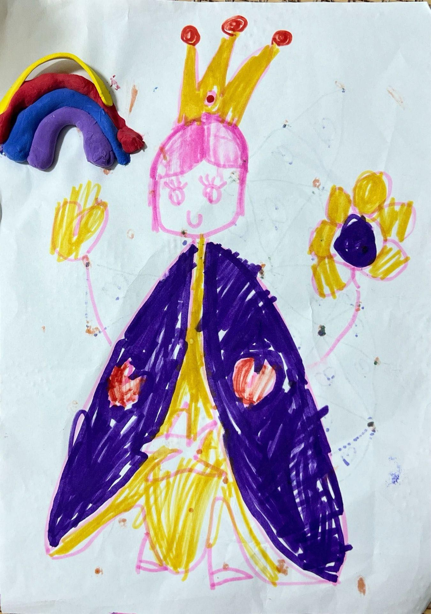
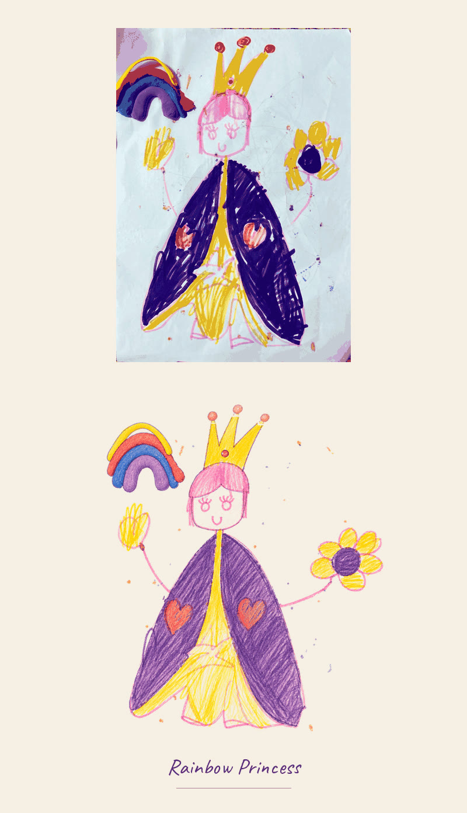

Hi 银银！
和小兔子去冒险 ✦
从第一关开始，一起唱起来

🗺️ 银银和小兔子去冒险
慢慢来，你可以的🤝 和爸爸妈妈一起
我的小徽章 ⭐
看完一关，再做小任务，就能得到一枚！
银银的画廊 🌈
这是银银画的彩虹公主。彩虹裙摆里，藏着一个会动的小故事。


看画和播放动画随时都可以。完成八关及小任务，就能点亮彩虹公主徽章！
一起，把英语听熟
为什么做
这是爸爸给银银做的专属英语小冒险。让银银和小兔子一起听儿歌、看动画、读绘本，少一点挑选，多一点陪伴。
给谁看
给 6–8 岁、英语基本零基础的孩子。先跟唱，再看故事，最后听绘本。不要求每句都听懂。
怎么用
按顺序看八关，共 76 条视频。点视频上的「播放」，手机和平板还需要在播放器里点一下才会播放。看完手动打卡，完成亲子小任务，就能解锁下一关。八关和全部小任务完成后，会得到「彩虹公主」最终徽章。一次一小段，累了就休息。
「继续观看」会回到上次打开的视频，不记录播放秒数。进度只存在这台设备、这个浏览器，不会跨设备同步；清除浏览器资料会丢失进度。
家长须知
请先陪孩子预览。本站仅使用 B 站官方嵌入播放器，不保存视频流。播放器内的广告、推荐、登录或跳转由 B 站控制，本站无法过滤，请家长陪同。
部分视频为网友搬运，未核实取得版权授权，版权归原作者；接口可访问不代表版权授权，也不保证嵌入一直可播。视频可能失效，请只在家里看，不要下载或再次传播；家庭观看也不等于获得版权许可。本站不是 B 站官方产品。
打不开时可以稍后重试；下方「家长打开 B 站原页」会离开本站。审查详情见 REVIEW_LOG.md。
放到 iPhone / iPad 主屏幕
用 Safari 打开本站，点分享按钮 → 添加到主屏幕。以后就可以像小应用一样打开。网页可本地打开；添加到主屏幕请使用 HTTP(S) 网站地址，播放仍需联网。
开源致谢
改编自 BiliPicks，感谢作者 limin112 / MinLiBuilds。代码遵循 MIT License，Copyright (c) 2026 MinLiBuilds。视频及封面不属于代码授权范围。